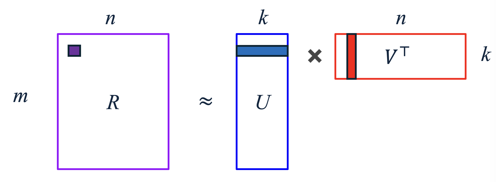
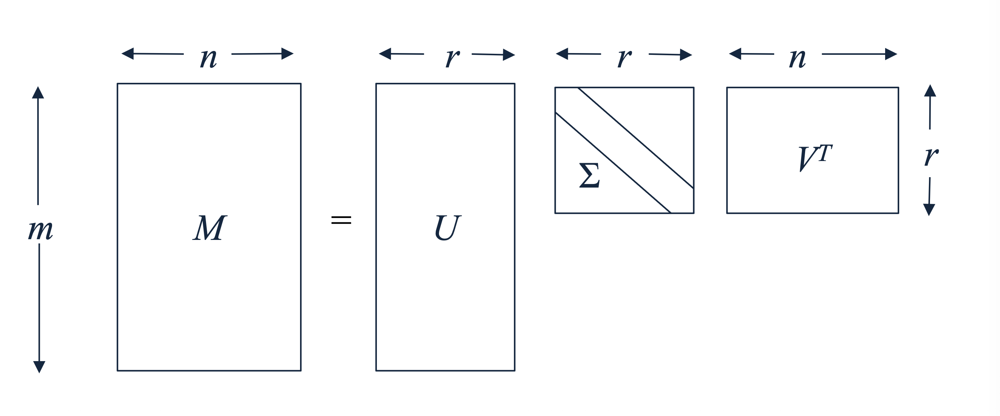

1. 추천 시스템의 목표와 유틸리티 행렬 (Introduction)
추천 시스템(Recommender Systems)의 궁극적인 목표는 사용자(User)와 아이템(Item) 간의 상호작용을 바탕으로, 아직 평가되지 않은 항목의 점수를 예측하는 것입니다. 이를 수학적으로 표현하기 위해 우리는 유틸리티 행렬(Utility Matrix, \(R\))이라는 개념을 도입합니다.
추천 시스템의 핵심 연산은 사용자와 아이템을 각각 의미 있는 형태(Representation)로 나타내는 것입니다. 대표적인 접근 방식은 다음과 같습니다.
- 콘텐츠 기반 필터링(Content-based approach): 아이템의 고유한 속성(메타데이터)과 사용자의 프로필을 명시적으로 생성하여 추천합니다.
- 협업 필터링(Collaborative Filtering, CF): 유틸리티 행렬 \(R\)의 행(사용자)과 열(아이템) 간의 패턴만을 이용하여 추천합니다.
2. 잠재 요인 모델 (Latent Factor Models)
유틸리티 행렬 기반의 협업 필터링을 고도화하기 위해 잠재 요인 모델(Latent Factor Models)이 등장합니다. 현대 머신러닝에서 협업 필터링을 언급할 때, 대다수는 이 잠재 요인 모델을 지칭합니다.
잠재 요인 모델은 다음과 같은 핵심 가정을 바탕으로 합니다:
- 사용자와 아이템을 매우 잘 설명할 수 있는 숨겨진 잠재 요인(Latent Factors)이 존재한다.
- 예를 들어, 영화 추천에서 이 요인은 ‘특정 장르에 대한 선호도’, ‘유명 배우의 출연 여부’, ‘특정 감독의 연출 스타일’ 등 인간이 인지할 수 있는 개념(Concepts/Topics)일 수도 있고, 기계만이 이해할 수 있는 추상적인 특성일 수도 있습니다.
- 이러한 잠재 요인들은 외부의 추가적인 메타데이터 없이, 오직 유틸리티 행렬의 상호작용 데이터(User-item interactions)로부터 직접 추출(Extract)될 수 있다.
3. UV 분해 (UV Decomposition)
- 잠재 요인 모델을 구현하는 가장 대표적이고 직관적인 방법이 바로 UV 분해(UV Decomposition)입니다.
3.1. 수학적 공식화 (Mathematical Formulation)
UV 분해의 기본 아이디어는 \(m\)명의 사용자와 \(n\)개의 아이템으로 이루어진 커다란 유틸리티 행렬 \(R\)을 두 개의 저차원(Low-dimensional) 행렬 \(U\)와 \(V\)의 곱으로 분해하는 것입니다.
\(R \in \mathbb{R}^{m \times n}\): 원본 유틸리티 행렬 (관측된 평점 데이터)
\(U \in \mathbb{R}^{m \times k}\): 사용자(User) 행렬. \(m\)명의 사용자를 \(k\)차원의 잠재 벡터로 표현합니다.
\(V \in \mathbb{R}^{n \times k}\): 아이템(Item) 행렬. \(n\)개의 아이템을 \(k\)차원의 잠재 벡터로 표현합니다.
- 계산을 위해 행렬 곱에서는 \(V^{\top} \in \mathbb{R}^{k \times n}\)의 형태를 취합니다.
목표는 \(U\)와 \(V^{\top}\)의 곱이 유틸리티 행렬 \(R\)의 ‘관측된(비어있지 않은) 항목’들을 최대한 가깝게 근사(Approximate)하도록 만드는 것입니다.
\[R \approx UV^{\top}\]

3.2. 평점 예측 (Rating Prediction)
- 모델이 학습된 후, 사용자 \(x\)가 아이템 \(i\)에 내릴 평점(비어있는 항목)에 대한 예측값 \(\hat{r}_{xi}\)는 행렬 \(U\)의 \(x\)번째 행 벡터 \(u_x\)와 행렬 \(V\)의 \(i\)번째 행 벡터 \(v_i\)의 내적(Inner product)으로 간단히 계산됩니다.
\[\hat{r}_{xi} = u_{x}^{\top}v_{i} = \sum_{j=1}^{k} u_{xj} v_{ij}\]
- 이는 사용자의 잠재 요인 선호도 벡터와 아이템의 잠재 요인 특성 벡터가 얼마나 일치하는지를 투영(Projection)하여 점수화하는 논리적 과정입니다.
4. 목적 함수와 오차 측정 (Error Function)
행렬 \(U\)와 \(V\)를 학습시키기 위해서는 현재의 모델이 얼마나 예측을 잘하고 있는지 평가할 기준이 필요합니다. UV 분해에서는 주로 RMSE (Root-mean-square error) 또는 SSE (Sum of squared errors)를 목적 함수로 사용합니다.
여기서 매우 중요한 점은, 오차를 계산할 때 오직 관측된 평점(Non-blank entries)에 대해서만 계산한다는 것입니다. 관측된 평점의 집합을 \(E\)라고 할 때, 오차 함수는 다음과 같이 정의됩니다.
- 1. RMSE (Root-Mean-Square Error) \[RMSE(\hat{R}, R) = \sqrt{\frac{1}{|E|} \sum_{(x,i) \in E} (\hat{r}_{xi} - r_{xi})^{2}}\]
- 2. SSE (Sum of Squared Errors)
- 수학적 최적화 과정(예: 미분)에서의 편의성을 위해 루트와 평균을 제거한 형태인 SSE도 널리 사용됩니다. \[SSE(\hat{R}, R) = |E| \cdot RMSE^{2}(\hat{R}, R) = \sum_{(x,i) \in E} (\hat{r}_{xi} - r_{xi})^{2}\]
예시 계산: 만약 실제 평점이 \([5, 2, 3]\) 이고, 모델의 예측 평점이 모두 \(2\)인 행렬 \([2, 2, 2]\) 라고 가정해 봅시다. \[RMSE = \sqrt{\frac{(5-2)^2 + (2-2)^2 + (3-2)^2}{3}} = \sqrt{\frac{9 + 0 + 1}{3}} = \sqrt{3.333} \approx 1.826\]
5. UV Decomposition vs. SVD (특이값 분해와의 비교)
- 선형대수학에 익숙한 독자라면, 행렬을 저차원으로 분해하는 기법으로 SVD (Singular Value Decomposition)를 떠올릴 것입니다. SVD와 UV 분해는 어떤 차이가 있을까요?
5.1. SVD의 개념과 한계점
- 전통적인 SVD는 주어진 행렬 \(M\)을 직교 행렬(Orthogonal matrix) \(U, V\)와 대각 행렬(Diagonal matrix) \(\Sigma\)의 곱으로 완벽히 분해합니다. 추천 시스템에 적용할 때는 잠재 요인의 수 \(r\)을 선택하여 잘라낸(Truncated) 형태를 사용하며, 이 경우 SVD의 \(U\Sigma\)와 \(V^{\top}\)를 UV 분해의 \(U, V\) 행렬처럼 취급할 수 있습니다.
\[M = U \Sigma V^{\top}\]

5.2. UV 분해만의 차별점 (Differences from SVD)
- 수학적 구조의 유사성에도 불구하고, 기계학습 모델로서의 UV 분해는 전통적 SVD와 결정적인 차이점들을 가집니다.
- 경험적/확률적 접근 (Empirical & Stochastic Optimization)
- SVD는 수학적으로 닫힌 형태의 해(Closed-form solution)를 도출하는 해석적 기법입니다.
- 반면, UV 분해는 주로 경사하강법(Gradient Descent)과 같은 확률적 최적화(Stochastic optimization) 기법을 통해 경험적으로 파라미터를 찾아갑니다.
- 직교성 제약 없음 (No Orthonormal constraints)
- SVD에서 생성되는 행렬은 반드시 정규 직교(Orthonormal)해야 한다는 엄격한 수학적 제약이 존재합니다. UV 분해의 \(U\)와 \(V\) 행렬은 이러한 제약에서 자유롭습니다.
- 결측치(Missing Entries) 처리 방식
- 표준 SVD 행렬 연산을 수행하기 위해서는 행렬에 빈칸이 없어야 합니다. 따라서 추천 시스템의 희소 행렬을 SVD에 넣기 위해 보통 결측치를 \(0\)이나 평균값으로 채워 넣게 되는데, 이는 심각한 데이터 왜곡을 초래합니다.
- UV 분해는 유틸리티 행렬의 결측치를 철저히 무시(Ignores the missing entries)합니다. 위에서 오차 함수를 정의할 때 보았듯, 오직 관측된 데이터(\(E\))에 대해서만 학습을 진행합니다.
- 일반화(Generalization)와 과적합 방지
- UV 분해는 관측된 데이터를 훈련 데이터(Training portion)로 삼아 RMSE를 최소화하고, 이를 바탕으로 아직 보지 못한 데이터(Unseen data)에 대한 예측 성능, 즉 일반화 성능(Generalization)을 추구하는 머신러닝의 패러다임을 따릅니다.
- 따라서 무작정 잠재 차원의 수 \(k\)를 늘리는 것이 항상 좋은 것은 아니며, \(k\)가 지나치게 커지면 훈련 데이터에 과적합(Overfitting)되어 테스트 세트의 RMSE가 오히려 증가할 수 있습니다.